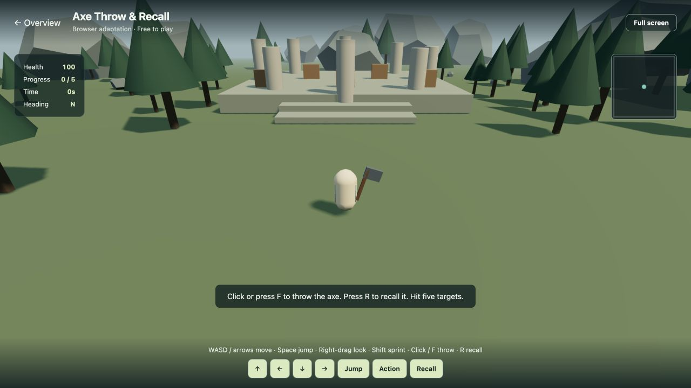

Aimed weapon throws
The throw turns an aiming decision into a moving object in the scene. Direction and timing connect player input with the weapon’s visible flight.
Unreal Engine
An interactive third-person axe mechanic built around aiming, throwing, impact, and recall. The axe moves between the character and the environment, making its flight and return the central interaction.


The throw turns an aiming decision into a moving object in the scene. Direction and timing connect player input with the weapon’s visible flight.
Surface properties control how an object responds to light. Color, texture, roughness, and reflective response make the same geometry read as different materials.
Recall closes the weapon interaction loop by bringing the thrown axe back to the character. The return movement makes weapon state and availability visible during play.
Click or press F to throw the axe. Press R to recall it. Hit five targets. Independent browser adaptation of the project concept, built with JavaScript and WebGL. This is not a packaged Unreal Engine build.
WASD / arrows move · Space jump · Right-drag look · Shift sprint · Click / F throw · R recall